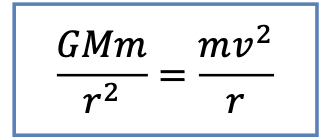
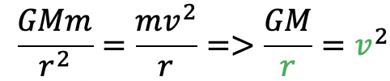
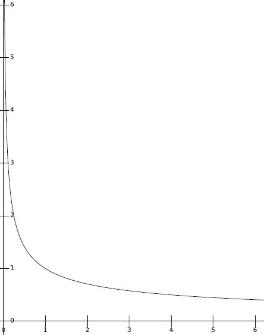
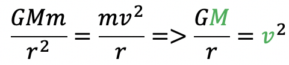
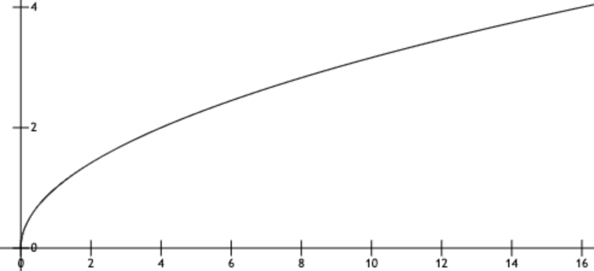

Celestial Movement Based on Newton's Law of Universal Gravitation
Author: Runqing Zhou
The problem of celestial movement seems to be out of reach, but their principles are actually very
close to our lives. We have heard of the story of Newton and Apple since childhood (even if it is fictitious). It
tells us the existence of gravity. In our life practice, we have found that if there is an object doing circular
motion, it must be provided with the centripetal force. The principles of gravity and circular motion constitute our
formula

Formula 1: gravitation is equal to centripetal force
This formula can explain the simplified model of satellite motion around the planet. The left hand side is the
gravitation force between a central planet with mass “M” and a satellite with mass “m” if the distance between them
is “d”. You may just take “G” as a constant. The right hand side is the centripetal force. In our model, “m” is the
mass of a satellite, “v” is the tangential velocity of a satellite.
Explore by yourself! Have fun!
Visualization1: relationship between tangential velocity and orbital radius
You can move the sliders to choose the radius you want. Then you will find the tangential velocity decreases as the
increase of the orbital radius. The function between the tangential velocity and radius is shown on the right. The
small blue point on the function represents the current status of blue satellite.
Note: Here we use dimensionless values. One unit of tangential velocity corresponds to the tangential velocity at
radius equals 1 unit.


radius =
3
tangential velocity =
0.58
radius
tangential
velocity
radius:
1
2
3
4
5
6
Visualization2: For a certain radius, relationship between tangential velocity
and the mass of central
planet
You can first use the select box to choose a certain radius, and then use the slider to change the mass of the
central planet and observe the corresponding change of the tangential velocity of the satellite. The function
between the tangential velocity and mass of the central planet is shown on the right. The
small blue point on the function represents the current status of blue satellite. You may find the sqrt relationship
between tangential velocity and mass of the central planet.
Note: Here we use dimensionless values. One unit of tangential velocity corresponds to the tangential velocity at
mass equals 1 unit for the radius you choose.


mass =
1
tangential velocity =
1.00
Mass of central planet
tangential
velocity
radius:
mass:
1
2
4
6
8
10
12
14
16
Visualization3: The process of changing an orbit
For the final part, let's learn an interesting topic. In real situation, satellite needs to change an orbit to
perform various tasks. Now let's see a simplified version of changing orbit.
Follow the directions and explore it!
->>>
<<<-
After first speed up, the orbit changes to an ellipse. The central planet is one of the focus of
this ellipse orbit.
We can see that the orbit has changed to a longer one.
To change to a longer orbit, the satellite should first speed up. Then the orbit will be changed into an
ellipse. The satellite will move along the ellipse orbit. During that process, the satellite's tangential
velocity will gradually decrease. When the satellite moves to the opposite position of first speed-up position, the
satellite should be speeded up again to maintain a circular motion. Besides, the velocity and radius of a satellite
in stable circular motion should satisfy our formula in visualization1.